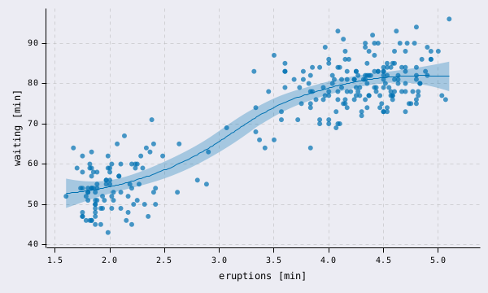
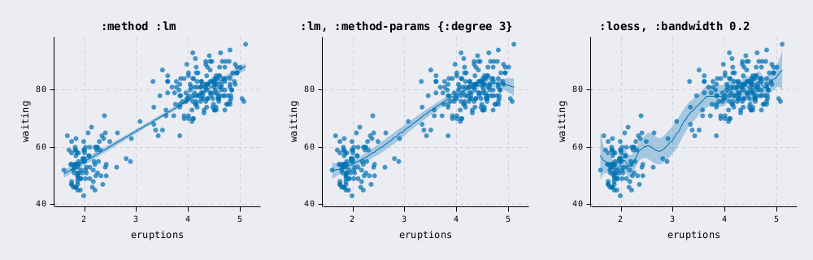
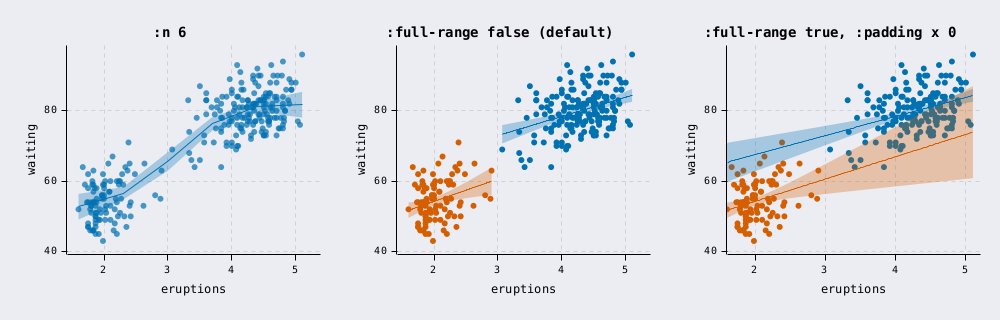
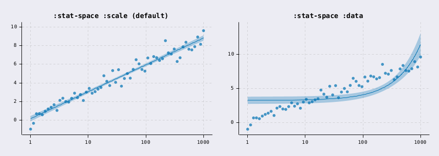
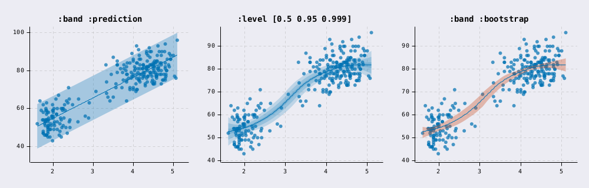
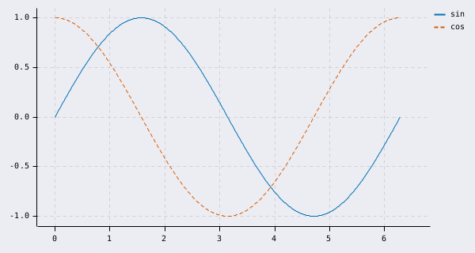
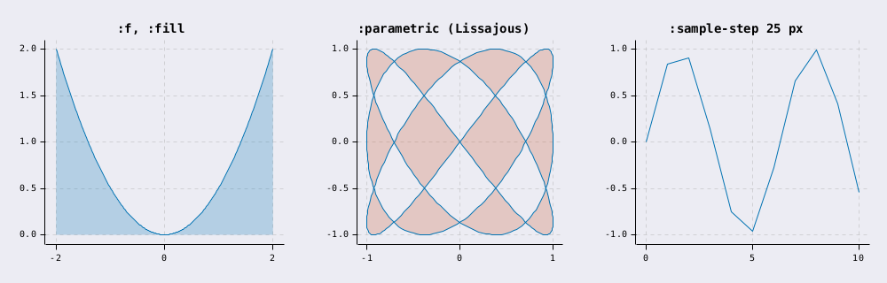
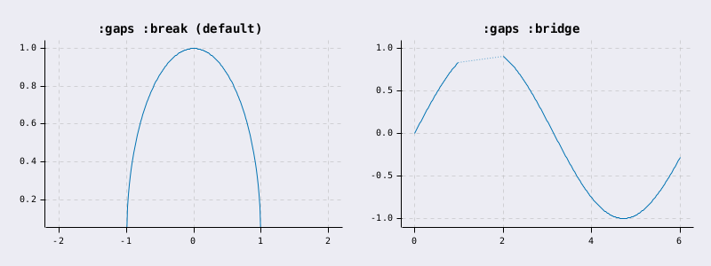
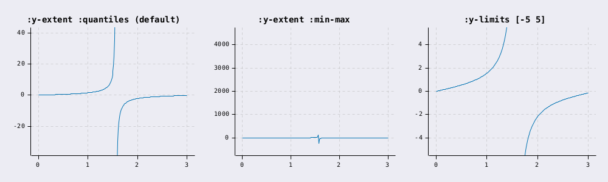

19 Fitted and function curves
These charts draw curves: a trend fitted to scattered points (smooth, one per group with its uncertainty band) and curves of given functions, y = f(x) or parametric (function).
(ns reference.charts-fitted-curves
(:require [fastmath.core :as m]
[fastmath.random :as r]
[cljplot2.chart :as chart]
[cljplot2.core :as plot]
[cljplot2.describe :as describe]
[notebook-utils :as nu]))Data: Old Faithful geyser eruptions, R datasets package faithful (Härdle 1991; Azzalini & Bowman 1990); licence: Part of R (GPL-2 | GPL-3).
(def faithful (nu/dataset :faithful))| eruptions | waiting |
|---|---|
| 3.6 | 79 |
| 1.8 | 54 |
| 3.333 | 74 |
| 2.283 | 62 |
| 4.533 | 85 |
| 2.883 | 55 |
| 4.7 | 88 |
| 3.6 | 85 |
| 1.95 | 51 |
| 4.35 | 85 |
| 1.833 | 54 |
| 3.917 | 84 |
| 4.2 | 78 |
| 1.75 | 47 |
| 4.7 | 83 |
| 2.167 | 52 |
| 1.75 | 62 |
| 4.8 | 84 |
| 1.6 | 52 |
| 4.25 | 79 |
| 1.8 | 51 |
| 1.75 | 47 |
| 3.45 | 78 |
| 3.067 | 69 |
| 4.533 | 74 |
| 3.6 | 83 |
| 1.967 | 55 |
| 4.083 | 76 |
| 3.85 | 78 |
| 4.433 | 79 |
| 4.3 | 73 |
| 4.467 | 77 |
| 3.367 | 66 |
| 4.033 | 80 |
| 3.833 | 74 |
| 2.017 | 52 |
| 1.867 | 48 |
| 4.833 | 80 |
| 1.833 | 59 |
| 4.783 | 90 |
| 4.35 | 80 |
| 1.883 | 58 |
| 4.567 | 84 |
| 1.75 | 58 |
| 4.533 | 73 |
| 3.317 | 83 |
| 3.833 | 64 |
| 2.1 | 53 |
| 4.633 | 82 |
| 2 | 59 |
| 4.8 | 75 |
| 4.716 | 90 |
| 1.833 | 54 |
| 4.833 | 80 |
| 1.733 | 54 |
| 4.883 | 83 |
| 3.717 | 71 |
| 1.667 | 64 |
| 4.567 | 77 |
| 4.317 | 81 |
| 2.233 | 59 |
| 4.5 | 84 |
| 1.75 | 48 |
| 4.8 | 82 |
| 1.817 | 60 |
| 4.4 | 92 |
| 4.167 | 78 |
| 4.7 | 78 |
| 2.067 | 65 |
| 4.7 | 73 |
| 4.033 | 82 |
| 1.967 | 56 |
| 4.5 | 79 |
| 4 | 71 |
| 1.983 | 62 |
| 5.067 | 76 |
| 2.017 | 60 |
| 4.567 | 78 |
| 3.883 | 76 |
| 3.6 | 83 |
| 4.133 | 75 |
| 4.333 | 82 |
| 4.1 | 70 |
| 2.633 | 65 |
| 4.067 | 73 |
| 4.933 | 88 |
| 3.95 | 76 |
| 4.517 | 80 |
| 2.167 | 48 |
| 4 | 86 |
| 2.2 | 60 |
| 4.333 | 90 |
| 1.867 | 50 |
| 4.817 | 78 |
| 1.833 | 63 |
| 4.3 | 72 |
| 4.667 | 84 |
| 3.75 | 75 |
| 1.867 | 51 |
| 4.9 | 82 |
| … | … |
19.1 Smoothing
chart/smooth fits a curve to each group’s points, by default with a confidence band. Use it to show the trend of scattered data.
:mapping:xrequired – The x of the points, a number or a date.:yrequired – The values the curve fits.:color– Splits the rows into groups, each with its own curve, band and colour.:dash– Splits the rows into groups, each curve with its own dash style.:pattern– Splits the rows into groups, each band with its own fill pattern.:group– Splits the rows into groups that look the same, each with its own fit.
(plot/render-image {:data faithful
:mapping {:x :eruptions :y :waiting}
:charts [(chart/scatter) (chart/smooth)]
:labels {:x "eruptions [min]" :y "waiting [min]"}}
{:width 600 :height 360})
19.1.1 Fit
These options choose how the curve is fitted. Change them when the default loess curve is too wiggly or too stiff, when you want a straight line or a polynomial, or when groups should share one x range.
(plot/render-image (plot/arrange [{:data faithful :mapping {:x :eruptions :y :waiting}
:charts [(chart/scatter) (chart/smooth {:method :lm})]
:labels {:title ":method :lm"}}
{:data faithful :mapping {:x :eruptions :y :waiting}
:charts [(chart/scatter) (chart/smooth {:method :lm :method-params {:degree 3}})]
:labels {:title ":lm, :method-params {:degree 3}"}}
{:data faithful :mapping {:x :eruptions :y :waiting}
:charts [(chart/scatter) (chart/smooth {:method-params {:bandwidth 0.2}})]
:labels {:title ":loess, :bandwidth 0.2"}}]
{:columns 3})
{:width 1000 :height 320})
With :n 6 the curve is a polyline through six points. Short and long eruptions each fit over their own x range unless :full-range is true (the right panel also drops the x padding):
(plot/render-image (plot/arrange [{:data faithful :mapping {:x :eruptions :y :waiting}
:charts [(chart/scatter) (chart/smooth {:n 6})]
:labels {:title ":n 6"}}
{:data faithful
:mapping {:x :eruptions :y :waiting :color #(if (> (:eruptions %) 3) "long" "short")}
:charts [(chart/scatter) (chart/smooth {:method :lm})]
:labels {:title ":full-range false (default)"}
:legend false}
{:data faithful
:mapping {:x :eruptions :y :waiting :color #(if (> (:eruptions %) 3) "long" "short")}
:charts [(chart/scatter) (chart/smooth {:method :lm :full-range true :padding {:x [0 0]}})]
:labels {:title ":full-range true, :padding x 0"}
:legend false}]
{:columns 3})
{:width 1000 :height 320})
These seeded random values grow with log x; x spreads evenly over three decades:
(def log-growth (mapv (fn [^double u ^double e] {:x (m/pow 10.0 u) :y (+ (* 3.0 u) e)})
(m/slice-range 0.0 3.0 60)
(r/->seq (r/distribution :normal {:sd 0.5 :rng (r/rng :mersenne 11)}) 60)))| x | y |
|---|---|
| 1.0 | -0.9677067812193026 |
| 1.1242100350620865 | -0.33959754375648343 |
| 1.263848202934298 | 0.6897060106248107 |
| 1.4208308325339223 | 0.6952309324761786 |
| 1.5973122800602544 | 0.5728674843580918 |
| 1.7957144943716399 | 0.9560000344318531 |
| 2.0187602546790386 | 1.2022561273673333 |
| 2.2695105366946686 | 1.3830363823753409 |
| 2.5514065200312888 | 1.6532649166564506 |
| 2.868316813342011 | 1.0435235873302333 |
| 3.2245905452963948 | 2.124292203254176 |
| 3.6251170499885332 | 2.3528068150638806 |
| 4.075392965871777 | 1.9975837036653 |
| 4.581597669054491 | 1.9353480308295994 |
| 5.1506780761681235 | 2.3457176251133465 |
| 5.790443980602486 | 2.8959953348461966 |
| 6.50967523045817 | 2.410660229815369 |
| 7.318242219076176 | 2.752597361066315 |
| 8.22724134170047 | 2.1109349041246492 |
| 9.24914727721733 | 3.0122211036085846 |
| 10.3979841848149 | 3.413471391783177 |
| 11.689518164985783 | 2.891164058699589 |
| 13.141473626117568 | 3.057144150244693 |
| 14.773776525985111 | 3.327300308961957 |
| 16.608827826277157 | 3.503266311770115 |
| 18.671810912919195 | 4.768358332694543 |
| 20.991037201085547 | 4.171596675308383 |
| 23.598334667821938 | 3.7155519974596007 |
| 26.52948464431896 | 5.324766852321342 |
| 29.824712862168912 | 4.060894946377007 |
| 33.529241492495565 | 5.419570168065395 |
| 37.69390975388364 | 3.6512159777560718 |
| 42.37587160604063 | 4.474888328759087 |
| 47.639380104013405 | 5.003485020410157 |
| 53.55666917706899 | 4.5101746465399195 |
| 60.20894493336129 | 5.452731526728738 |
| 67.68750009458535 | 6.491725895702693 |
| 76.09496685459875 | 6.045229081651237 |
| 85.54672535565676 | 5.43721678644992 |
| 96.17248711152965 | 5.265849631488806 |
| 108.11807510766077 | 6.680147238793859 |
| 121.54742500762872 | 6.075793172297352 |
| 136.64483492953258 | 6.8268133487209015 |
| 153.6174946671828 | 6.713290036880784 |
| 172.6983290659436 | 6.407576884843991 |
| 194.14919457438816 | 6.5934148444818925 |
| 218.26447283974872 | 8.535866041567777 |
| 245.37511066398167 | 7.230708571315785 |
| 275.85316176291843 | 7.102723222554722 |
| 310.1168926574779 | 7.641514653032799 |
| 348.6365227678084 | 6.298543696652105 |
| 391.94067748472213 | 6.702356682303348 |
| 440.6236427773573 | 7.86959747912834 |
| 495.353520895917 | 8.367502451473573 |
| 556.8813990945267 | 7.622970960702512 |
| 626.0516572014815 | 7.5460735790204865 |
| 703.8135554931555 | 7.892335611802074 |
| 791.2342618981319 | 8.932918994803277 |
| 889.5134973108236 | 8.14983759729005 |
| 1000.0 | 9.611446772440747 |
On a log axis the default :stat-space :scale gives a straight line; :stat-space :data fits data units, so the axis bends it:
(plot/render-image (plot/arrange [{:data log-growth :mapping {:x :x :y :y} :scales {:x {:kind :log}}
:charts [(chart/scatter) (chart/smooth {:method :lm :stat-space :scale})]
:labels {:title ":stat-space :scale (default)"}}
{:data log-growth :mapping {:x :x :y :y} :scales {:x {:kind :log}}
:charts [(chart/scatter) (chart/smooth {:method :lm :stat-space :data})]
:labels {:title ":stat-space :data"}}]
{:columns 2})
{:width 900 :height 320})
19.1.2 Band
These options shape the uncertainty band around the curve. Use them to show where the fitted curve may lie or where new points may fall, to widen or nest the band, or to leave it out.
(plot/render-image (plot/arrange [{:data faithful :mapping {:x :eruptions :y :waiting}
:charts [(chart/scatter) (chart/smooth {:method :lm :band :prediction})]
:labels {:title ":band :prediction"}}
{:data faithful :mapping {:x :eruptions :y :waiting}
:charts [(chart/scatter) (chart/smooth {:level [0.5 0.95 0.999] :alpha 0.2})]
:labels {:title ":level [0.5 0.95 0.999]"}}
{:data faithful :mapping {:x :eruptions :y :waiting}
:charts [(chart/scatter)
(chart/smooth {:band :bootstrap :fill [200 80 40 90]
:bootstrap {:samples 100 :rng (r/rng :mersenne 3)}})]
:labels {:title ":band :bootstrap"}}]
{:columns 3})
{:width 1000 :height 320})
A higher :level widens the confidence band, here in its own fill; :band :none leaves it out:
(plot/render-image (plot/arrange [{:data faithful :mapping {:x :eruptions :y :waiting}
:charts [(chart/scatter) (chart/smooth {:band :confidence :level 0.999 :fill [200 80 40 90]})]
:labels {:title ":band :confidence, :level 0.999"}}
{:data faithful :mapping {:x :eruptions :y :waiting}
:charts [(chart/scatter) (chart/smooth {:band :none})]
:labels {:title ":band :none"}}]
{:columns 2})
{:width 800 :height 300})
19.2 Function curves
chart/function draws curves of functions, y = f(x) or parametric [x y] = f(t), sampled over :domain (by default the panel’s x range) or, for parametric curves, over :t. It takes no data rows and, like an annotation, draws in every panel. Its own mapping can colour or dash several functions by their labels. Use it for a known curve, a model or a reference shape.
:mapping:color– Splits the rows, one per function, into groups, each with its own colour.:dash– Splits the rows, one per function, into groups, each with its own dash style.:group– Splits the rows into groups that look the same, one row per function.
(plot/render-image {:charts [(chart/function {:f {"sin" #(m/sin %) "cos" #(m/cos %)}
:domain [0 m/TWO_PI]
:mapping {:color :function :dash :function}})]}
{:width 600 :height 320})
19.2.1 Curve
These options give the functions, the range they are sampled over and how densely, the fill and the chart’s own mapping:
(plot/render-image (plot/arrange [{:charts [(chart/function {:f #(* % % 0.5) :domain [-2 2] :fill [0 114 178 60]})]
:labels {:title ":f, :fill"}}
{:charts [(chart/function {:parametric (fn [t] [(m/sin (* 3 t)) (m/sin (* 4 t))])
:t [0 m/TWO_PI] :fill [200 80 40 60]})]
:aspect :iso
:labels {:title ":parametric (Lissajous)"}}
{:charts [(chart/function {:f #(m/sin %) :domain [0 10] :sample-step 25})]
:labels {:title ":sample-step 25 px"}}]
{:columns 3})
{:width 1000 :height 320})
19.2.2 Gaps
These options handle a nil or non-finite result of a function:
(plot/render-image (plot/arrange [{:charts [(chart/function {:f #(m/sqrt (- 1 (* % %))) :domain [-2 2]})]
:labels {:title ":gaps :break (default)"}}
{:charts [(chart/function {:f #(when-not (< 1 % 2) (m/sin %)) :domain [0 6]
:gaps :bridge :bridge {:alpha-factor 0.6 :dash :dotted}})]
:labels {:title ":gaps :bridge"}}]
{:columns 2})
{:width 800 :height 300})
19.2.3 Extent
These options pick the samples that set the y axis and the room around the curve. Here tan has poles: the default quantiles keep the axis readable, all samples stretch it, :y-limits sets it:
(plot/render-image (plot/arrange [{:charts [(chart/function {:f #(m/tan %) :domain [0 3]})]
:labels {:title ":y-extent :quantiles (default)"}}
{:charts [(chart/function {:f #(m/tan %) :domain [0 3] :y-extent :min-max})]
:labels {:title ":y-extent :min-max"}}
{:charts [(chart/function {:f #(m/tan %) :domain [0 3] :y-limits [-5 5]})]
:labels {:title ":y-limits [-5 5]"}}]
{:columns 3})
{:width 1000 :height 300})
With no padding on x the curve meets the panel’s sides; a quarter of the span on y leaves room above and below:
(plot/render-image {:charts [(chart/function {:f #(m/sin %) :domain [0 6.3] :padding {:x [0 0] :y [0.25 0.25]}})]
:labels {:title ":padding {:x [0 0] :y [0.25 0.25]}"}}
{:width 500 :height 280})
source: notebooks/reference/charts_fitted_curves.clj